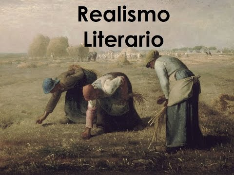

Como realismo se denomina la tendencia a presentar las cosas tal cual son en realidad, sin adornos, exageraciones o matices. La palabra, como tal, se compone con el vocablo real y el sufijo -ismo, que indica ‘escuela’, ‘movimiento’ o ‘tendencia’.
El realismo es una corriente filosófica, artística y literaria que ha tenido expresiones en las más diversas esferas de actividad humana, como en la pintura, la literatura y en el derecho.
Realismo es también un concepto político que se refiere a la defensa de la monarquía y del poder real como sistema político para la administración del Estado. En este sentido, son realistas quienes se muestran favorables al establecimiento, conservación o restauración del poder monárquico.
Seguir leyendo...